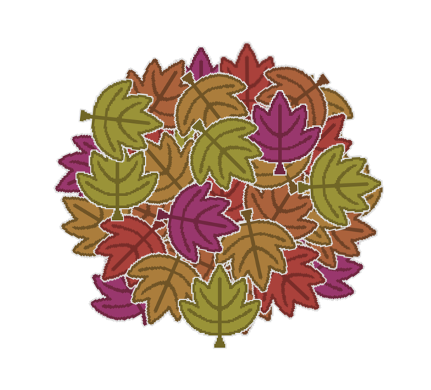
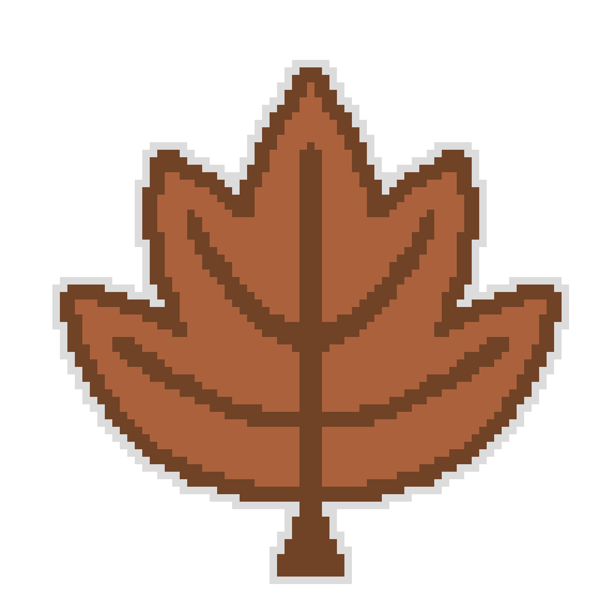
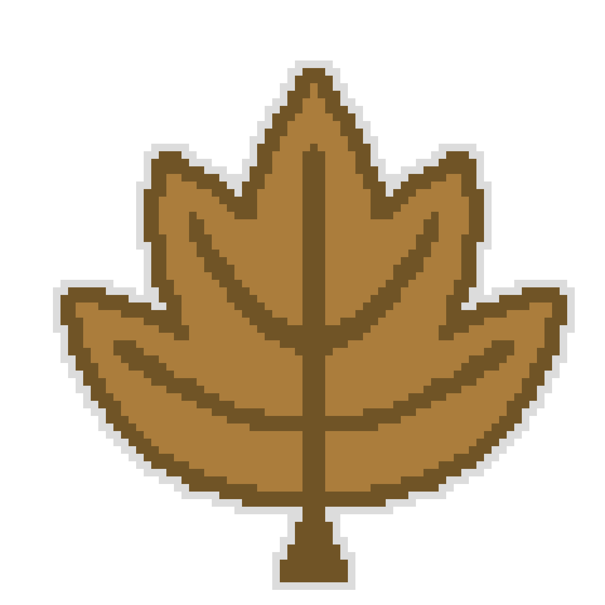
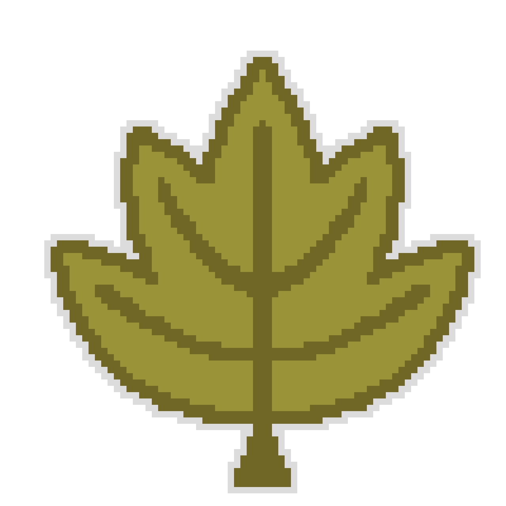

| Date | Progress Notes | Resources Used | Links |
|---|---|---|---|
| 10/24/2026 | Managed to create the base code and get a general function working. I need to work my later on, to add upgrades and further features to the game. Note: Name still in progress |
Youtube Videos Coding help sites My parents |
Tutorial Part 1 Help Site |
| 10/25/2026 | Added upgrades to the main gameplay system, in addition to making the concept more original. I thought it would be cute, if the currency was leaves, instead of coins, to add to the autumn theme. Note: Got the name! |
More Youtube More coding sites |
Tutorial Part 2 Help Site |
| 10/26 to 10/29/2026 |
Unfortunately was unable to make notable progress. But, I managed to make a little bit of sprite art. Note: I'm starting to think of some additional features & gameplay. |
N/A | N/A |



